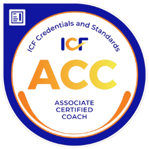

Об опыте, практике и моей философии работы с людьми
01
Опыт
Практика с 2021 года, более 300 часов индивидуальных коуч-сессий,
участие в волонтёрских проектах: для украинских лидеров, для
предпринимателей с миграционным опытом.
02
Результативность
Довольные клиенты и стабильные результаты после 3–12 месяцев
работы: рост дохода, выход на новые горизонты, сложные решения без
страха и сожалений, обретение новых смыслов.
03
Больше, чем достижение цели
Определение новых желаемых жизненных стратегий и их внедрение,
развитие необходимых привычек, гибкости мышления для
самостоятельного достижения целей в будущем.
Подтверждённая квалификация
Сертификация уровня ACC по стандартам Международной Федерации
Коучинга (ICF), аккредитация ACTP и дополнительное обучение.
С кем я работаю
Предприниматели и владельцы проектов
Руководители и топ-менеджеры
Эксперты, специалисты, создатели
Личностное развитие и переходные периоды
Коучинг — это диалог, после которого появляется ясность,
уверенность, энергия и конкретные шаги. Это партнёрский процесс,
основанный на доверии и вопросах, который помогает раскрывать
потенциал и находить решения внутри себя.
Услуги
Определение новых жизненных стратегий и их внедрение: развитие
нужных привычек и гибкости мышления для самостоятельного достижения
целей.
Пакет «Переход»
Для тех, кто находится в точке выбора или изменений — новая
должность, переезд, смена направления. Принятие решений в условиях
неопределённости. Сохранить опору, найти ясность и выстроить
устойчивый курс.
Поддержка при запуске нового проекта, переходе в частную практику
или начале собственного дела. Новая идентичность. Не упустить
важное, найти лучшие решения и уверенность. От 12 сессий.
Для тех, кто стремится масштабироваться — бизнес, эффективность
или доход без выгорания. Систематизация, лидерство, делегирование,
стратегия и опора на себя. От 12 сессий.
Для тех, кто хочет не только достигать, но и чувствовать тепло и
близость в отношениях. Восстановление эмоционального контакта в
паре, поиск партнёра, баланс между личным и профессиональным.
Запишитесь на бесплатную 20-минутную консультацию — обсудим ваш
запрос, вы получите первые профессиональные рекомендации и поймёте,
какой формат лучше подходит именно вам.
В каждом человеке уже есть всё необходимое для реализации желаемого.
Вопрос лишь в том, сможем ли мы раскрыть это внутри. Моя миссия —
помочь вам открыть этот потенциал.
Я руководитель детского центра, и когда попала к Оле планировала
открывать второй филиал.Мне не давалось это решение легко и
сначала я думала, что причина в моем неумении быстро принимать
решения.Но благодаря нужным вопросам Оли, заданным с большим
тактом и очень вовремя, я поняла, что причина затягивания с
проектом крылась ещё и в нерешенных вопросах с сотрудниками, в
моем отношении к ошибкам, в повышенном контроле.Анализируя
вместе с Олей свои ответы на поставленные вопросы, я смогла
выйти за рамки привычного реагирования на ситуации и
почувствовала в себе потенциал действовать. Даже после окончания
курса я продолжаю пользоваться некоторыми техниками, которые мы
применяли.Огромное спасибо Оле за помощь в одной из самых важных
сфер жизни - работа и самореализация!
— Яна, руководитель детского центра, г. Харьков
Я часто вспоминаю нашу совместную работу - спасибо тебе
огромное! Она до сих пор мне помогает) Тогда в моменте казалось
все не так быстро, хотя изменения были сразу. Но спустя время -
у меня есть все, что мы тогда проговаривали - работы в большом
проекте, план и пути как идти. Я не боюсь эти планы строить и
четко понимаю, что отпускать не хочу. Раньше с работой мне было
достаточно легко расстаться, а сейчас все наоборот - мне мало,
хочется больше. Правда перед этим мне пришлось пройти огромный
сложный путь. Но это все путь! Спасибо тебе огромное! За мою
стойкость сейчас и понимание как двигаться дальше)
— Юлия, маркетолог
Оля, я хочу написать тебе отзыв и благодарность) и конечно
впечатления от работы с тобой в коучинге.Мне было сложно, много
сопротивления и непонимания, почему такие трудности. Сейчас
поняла, что даже думать «по-другому» - это колоссально сложно. Я
тогда радовалась нескольким инсайтам, очень важным для меня. Но
настоящее осознание догоняет сейчас, спустя уже пару месяцев)
Это как расширение, мои убеждения, которые так мешали, сейчас не
мешают, они блекнут и по-моему скоро совсем пропадут) Этот шлейф
от нашей работы длится до сих пор и мне сильно легче теперь.Я
здесь не пишу о конкретных результатах, их не много, но я кайфую
от высвобождения от ограничений, от внутреннего позволения для
себя большего. От того, что прибралась в голове)Благодарна тебе
за твою работу!
— Мария, финансовый консультант
Скажу честно я сомневалась стоит ли мне идти в коучинг ,
несмотря на то что хороша знакома с методом и знаю что он
работает. И после первой же сессии я ни на секунду не пожалела о
решении, что начать в эту работу с Олей. Наше взаимодействие
превзошло все мои ожидания. Я встретилась с собой настоящей,
увидела свои желания и ту силу, которая меня толкает постоянно
вперед. Без преувеличения скажу-это удивительный опыт знакомства
с собой , истинными желаниями и чего то большего, того, что не
видно снаружи. После каждой сессии я чувствую как меня наполняет
энергия действия, уходят страхи и появляются инструменты работы
с собой, которые помогают двигаться вперед, не сдаваться и
верить в свою мечту. Вот и прошло 3 месяца нашей совместной
работы, 10 сессий осознаний , поиска себя, новых качеств и
удивительных открытий. Я бесконечно благодарна за ту теплоту,
поддержку и принятие, которые шли от тебя на протяжении всех
наших встреч. Я поняла и приняла свои разные стороны, свою
слабость и силу, напор и спокойствие. В твоем поле не страшно
раскрываться, исследовать тайные и порой темные части меня,
узнавать себя и копать еще глубже. Рада, что прошла этот опыт и
однозначно рекомендую всем не бояться и идти в работу с тобой ❤️
— Светлана, нутрициолог, велнесс-коуч
Привет! Хочу коротко написать о своих инсайтах и мыслях после
нашей финальной встречи. Главное,что я заметила -это
то,насколько быстрее и эффективнее я начала докапываться до сути
проблемы и находить правильные алгоритмы решения. В этот раз вся
головоломка распуталась,как только я устно сформулировала свой
запрос и услышала от тебя первый вопрос. Поэтому мы успели
разобрать ещё много мелких,но очень важных вопросов. И я ушла со
встречи с целым багажом решений,а также новых идей и задач. Не
устану тебя благодарить! Спасибо тебе большое за продуктивную
работу
Профессиональная коуч с более чем 300 часами практики с 2021
года. Работаю с руководителями, предпринимателями и
специалистами, которые проходят периоды перемен и стремятся к
ясности, внутренней опоре и стабильному росту.
Мой подход — сочетание глубины психологии, структурности бизнеса
и искренней человечности. Мои клиенты достигают ощутимых
результатов — новые контракты, x3 рост дохода, уверенное
лидерство и восстановленный баланс в жизни. Помогаю находить
опору в себе, принимать смелые решения и строить жизнь, которая
действительно откликается.

Если вы:
➤ стоите перед сложным выбором, находитесь в точке
неопределённости или растерянности;
➤ стремитесь к изменениям, много делаете, но словно ходите по
кругу;
➤ проходите период трансформаций — новая роль, переезд, смена
окружения;
➤ чувствуете, что не успеваете реализовать важное и боитесь
упустить что-то существенное.
И хотите:
✔ принимать решения спокойно — без сомнений и сожалений;
✔ восстановить ясность, внутреннюю опору и уверенность в себе;
✔ сделать прорыв и выйти из замкнутого круга;
✔ быстро адаптироваться к новым условиям и вернуть чувство
контроля;
✔ реализовывать важное с лёгкостью, эффективностью и
вдохновением.
✔ Индивидуальные или групповые онлайн-сессии через Google Meet
в зависимости от выбранной программы.
✔ Длительность встречи — до 60 минут, 1 раз в неделю в заранее
согласованный день.
Минимальная длительность курса — 3 месяца. Этого времени
достаточно, чтобы сформировать новые стратегии мышления, начать
внедрять их и получить первые результаты.
Индивидуальный коучинг
Персональные сессии, где всё пространство принадлежит вам —
вашим целям, состояниям и решениям. Формат для тех, кто готов
к глубине, личным трансформациям и ощутимым результатам.
Групповой коучинг
Безопасная среда единомышленников, где вы получаете новые
взгляды, поддержку и вдохновение. Формат для тех, кто хочет
двигаться к целям вместе, видеть себя через опыт других и
расширять горизонты.
Да! Коучинг полностью онлайн, поэтому участвовать можно
независимо от места проживания.
✔ обретаете ясность и уверенность в своих решениях, понимаете,
куда и зачем движетесь;
✔ находите внутреннюю опору — спокойствие, не зависящее от
внешних обстоятельств;
✔ выходите из замкнутых сценариев и видите новые варианты
действий;
✔ становитесь более собранными, осознанными и эффективными в
достижении целей;
✔ восстанавливаете состояние энергии и ресурса, появляется
вдохновение действовать;
✔ строите сбалансированную жизнь, в которой есть место и
достижениям, и удовольствию.
Мы связываемся с вами, чтобы уточнить вашу цель на коучинг:
какого результата хотите достичь и какие изменения реализовать в
жизни или бизнесе. Затем проводится короткая встреча-знакомство
и пробная сессия, во время которой я отвечаю на ваши вопросы и
мы вместе понимаем, подходит ли формат. После этого принимаем
решение о сотрудничестве, подписываем контракт, который
формализует нашу работу, и вы осуществляете оплату удобным
способом: банковским переводом или через платёжную систему по
ссылке. По желанию можно записывать сессии для личного
использования.